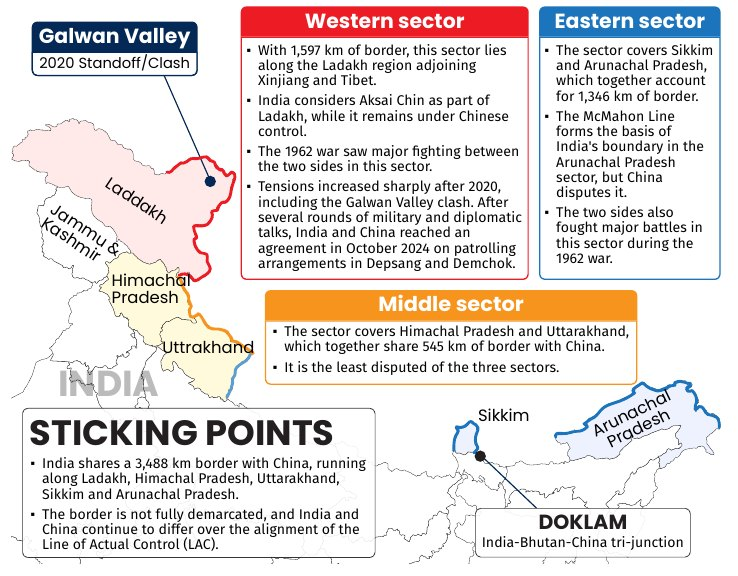
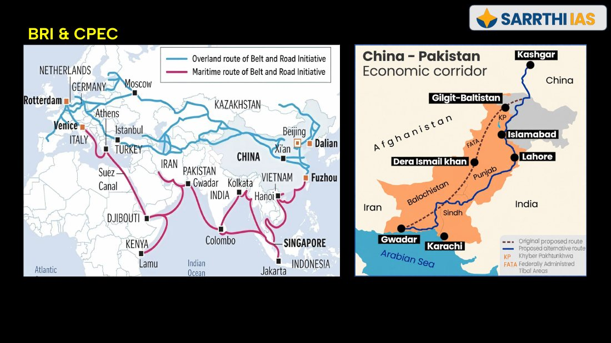
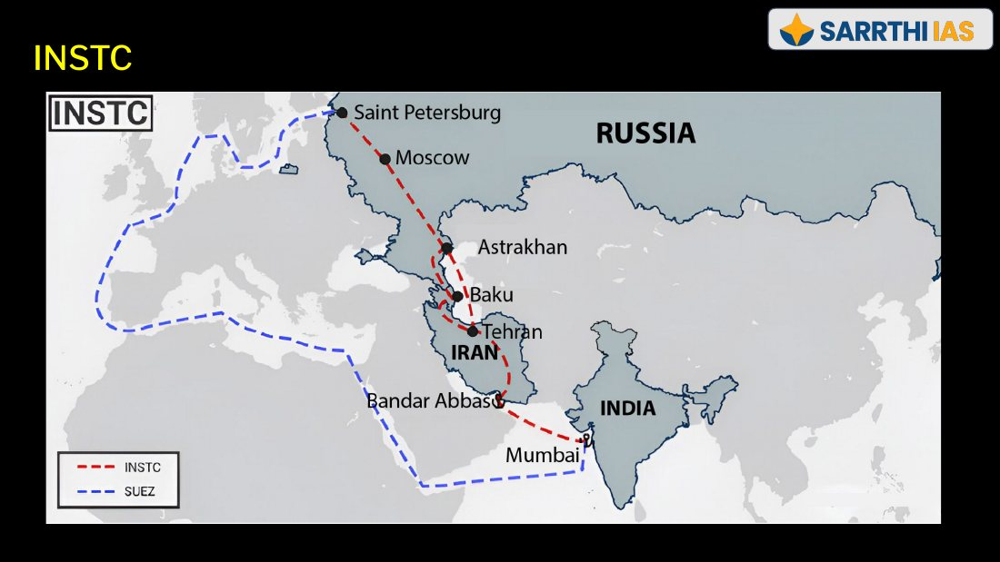

Chapter 1: six phases
Phases 5 and 6 (US-China rivalry, Russia-West) are unpacked here with each power’s ambitions and instruments.
What the US, China and Russia want and how they act, how their rivalries land on India, and India’s ties with China, the US, Russia, the EU, France, Japan and Australia.
| Signal in the material | Where | Why it matters |
|---|---|---|
| “Core idea: Major powers shape the choices available to other countries.” Responses: balancing, bandwagoning, strategic autonomy | Slide 2 | The frame for every “why does India do X?” answer. |
| “Core idea: The US is moving towards more interest-driven and transactional global leadership.” “US power is not only military. It is also financial, institutional and technological.” | Slide 7 | Gives the US paragraph in any answer on US policy. |
| “Core idea: Technology has become a national-security issue.” | Slide 12 | Links US-China rivalry to chips, AI, export controls. |
| “Core idea: It is not a complete new Cold War, because economic interdependence continues.” (US-China) | Slide 13 | Use it to test a “new Cold War” claim in a Mains question. |
| “Core idea: The world is not divided into two fixed blocs. Many states still follow strategic autonomy.” (Russia-West) | Slide 15 | Same use: test a “two blocs” claim. |
| India follows strategic autonomy, multi-alignment, issue-based partnerships; avoids permanent dependence on any one power | Slide 16 | The answer frame for the whole chapter. |
| India-China is “competition + interdependence + selective cooperation”; the Three Mutuals close the topic | Slides 17 and 23 | A ready conclusion for any China answer. |
| India-US: “Partnership, not alliance”; “India seeks / India avoids” table | Slides 24 and 28 | The most reusable table in the chapter. |
| India-Russia: from a defence-and-energy anchor into a diversified partnership | Slide 36 | A ready conclusion for any Russia answer. |
| Year, marks, words | What was asked | Answer or trap | Where in this chapter | Source |
|---|---|---|---|---|
| Mains 2026 · 15 marks · 250 words | China’s BRI “has transformed South Asia from a regional space into a theatre of great power competition.” Analyse the strategic implications of the BRI for India’s security and regional influence in South Asia. | Open-ended. See the skeleton in Practice. | Sections 5, 9 and 10 (CPEC, Gwadar, String of Pearls); BRI 2013 in Chapter 1 | handout p. 24 (also slide 3 of PPT-1) |
| Mains 2024 · 10 marks · 150 words | “The West is fostering India as an alternative to reduce dependence on China’s supply chain and as a strategic ally to counter China’s political and economic dominance.” Explain with examples. | Open-ended. See the skeleton in Practice. | Sections 5, 13, 18 and 21 | handout p. 24 |
| Mains 2023 · 15 marks · 250 words | “The expansion and strengthening of NATO and a stronger US-Europe strategic partnership works well for India.” What is your opinion? Give reasons and examples. | Open-ended. “Agree in part”: test the claim. See the skeleton in Practice. | Sections 6, 7, 12-15 and 18 | handout p. 24 |
| Mains 2021 · 15 marks · 250 words | AUKUS is aimed at countering China’s ambitions in the Indo-Pacific. Is it going to supersede the existing partnerships in the region? Discuss its strength and impact. | Open-ended. AUKUS is only named in these notes (a US minilateral grouping); see the skeleton and its thin-notes warning. | Section 2 (US minilateral groupings); sections 5 and 13 | handout p. 24 |
| Mains 2020 · 15 marks · 250 words | What is the significance of Indo-US defence deals over Indo-Russian defence deals? Discuss with reference to stability in the Indo-Pacific region. | Open-ended. See the skeleton in Practice. | Sections 13, 14 and 16 | handout p. 24 |
| Mains 2020 · 15 marks · 250 words | “Quadrilateral Security Dialogue (Quad)” is transforming itself into a trade bloc from a military alliance, in present times — Discuss. | Open-ended. Also quoted in Chapter 1. | Sections 2, 13, 15, 20 and 21; Chapter 1 | handout p. 24 |
| Mains 2019 · 15 marks · 250 words | “What introduces friction into the ties between India and the United States is that Washington is still unable to find for India a position in its global strategy, which would satisfy India’s national self-esteem and ambitions.” Explain with suitable examples. | Open-ended. See the skeleton in Practice. | Sections 12 and 14 | handout p. 24 |
| Mains 2019 · 10 marks · 150 words | “The time has come for India and Japan to build a strong contemporary relationship, one involving global and strategic partnership that will have a great significance for Asia and the world as a whole.” Comment. | Open-ended. See the skeleton in Practice. | Section 20 | handout p. 24 |
| Mains 2018 · 15 marks · 250 words | In what ways would the ongoing US-Iran Nuclear Pact Controversy affect the national interest of India? How should India respond? | Open-ended. Thin notes: the US-Iran nuclear pact is not covered here; only Iran-linked pieces (Chabahar, INSTC, Iran sanctions) appear. | Sections 2, 6 and 16 (partial) | handout p. 24 |
| Mains 2017 · 10 marks · 150 words | “China is using its economic relations and positive trade surplus as tools to develop potential military power status in Asia.” In the light of this statement, discuss its impact on India as her neighbour. | Open-ended. See the skeleton in Practice. | Sections 3, 5, 9 and 10 | handout p. 24 |
Mains years quoted: 2017, 2018, 2019 (two), 2020 (two), 2021, 2023, 2024, 2026. The 2026 BRI question and the 2020 Quad question are also quoted in Chapter 1. Prelims years quoted: none quoted in the material. Every question is a statement or a “discuss” type: test the claim, then answer with examples.
“International politics, like all politics, is a struggle for power.” (Hans J. Morgenthau, quoted in the handout.)
A major power is a state with significant economic, technological and military capabilities and the strategic intent to shape the international order. Unlike regional powers, major powers influence multiple regions and global institutions through deterrence, agenda-setting and economic interdependence. The USA, China and Russia qualify because they combine strong military, economic and technological capabilities with the intent to shape the global order.
| Response | Meaning |
|---|---|
| Balancing | Opposing a dominant power |
| Bandwagoning | Aligning with a stronger power to gain security, economic benefits or political advantages, instead of opposing it |
| Strategic autonomy | Taking independent decisions |
Major-power rivalries and alliances shape the global balance of power, which decides whether other states balance, bandwagon or pursue strategic autonomy.
| Pair | Why the weaker state aligns |
|---|---|
| Belarus-Russia | Security, energy and economic support |
| Pakistan-China | CPEC investment, defence support and diplomatic backing from China |
| Power | Objectives and ideology | Capabilities |
|---|---|---|
| United States | Retain global leadership (handout adds “manifest destiny”); preserve the global order through greater burden-sharing among allies and partners; maintain an edge in critical technologies; build flexible partnerships | Unmatched military power projection; world’s largest economy; leadership in critical technologies and global finance; soft power (media, movies) |
| China | Regain status as the Middle Kingdom (“centre of the world under the heaven”, the “middle kingdom complex”); build greater Chinese primacy, using multipolarity as a pathway; strengthen its position in the Indo-Pacific; reshape international institutions; reduce dependence on the US-led financial system | Massive manufacturing scale; near-monopoly on critical minerals (handout; slides say “leverage”); rapidly modernising military; leadership in next-gen tech (AI, green tech, 5G) |
| Russia | Maintain strategic influence across Eurasia; resist Western pressure; promote a non-Western multipolar order | Massive nuclear arsenal; advanced asymmetric warfare capabilities; immense energy and resource leverage |
| Ambition and aim | Instruments | Examples |
|---|---|---|
| Great-power competition and regional balance. Prevent rivals, especially China, from gaining regional dominance and keep a favourable balance of power | Minilateral groupings (flexible coalitions); forward military presence; deterrence; alliance burden-sharing | NATO, Quad, I2U2, AUKUS strengthen regional deterrence. 2026 National Defense Strategy stops an adversary from freely projecting power beyond the island chain Japan → Taiwan → Philippines → Borneo; strengthens the Indo-Pacific while keeping security in the Western Hemisphere |
| Economic, technological and defence superiority. Preserve US advantages and reduce strategic dependencies | Economic statecraft (tariffs, sanctions, export controls, dollar dominance, investment restrictions); technology policy (AI, semiconductors, advanced computing, quantum, cyber, space); industrial policy; supply-chain strategy (friend-shoring) | Lindsey O. Graham Sanctioning Russia and Iran Act, 2026: tariffs up to 100% on buyers of Russian energy; extends Iran sanctions. CHIPS and Science Act, 2022. 2023 AI Framework and Standards: the CAISI shapes international AI standards, watermarking benchmarks and frontier-model evaluations. Restrictions on advanced “Mythos 5” AI models to stop exploitation by foreign adversaries. IPEF and friend-shoring |
| Global financial and institutional influence. Retain influence over global finance, institutions, rules and economic networks | Financial power (central role of the US dollar); institutional power (shape rules, standards and networks through global institutions and bilateral partnerships) | Influence through the UN, IMF, World Bank and G20; dollar dominance, sanctions and financial restrictions used as economic statecraft |
| Regional security and Western Hemisphere focus. Protect US interests closer to home and strengthen influence in the Western Hemisphere | Regional security; Western Hemisphere strategy; renewed Monroe Doctrine principles | Operation Absolute Resolve in Venezuela; renewed Western Hemisphere security focus |
| Ambition and aim | Instruments | Examples |
|---|---|---|
| Achieve national rejuvenation. Strengthen capabilities and resilience against external pressure | Economic and technological resilience (cut dependence on foreign sources); military strengthening; strategic resilience | Made in China 2025; domestic capabilities in AI, semiconductors, 5G, EVs, batteries, renewable energy, advanced manufacturing |
| Strengthen regional centrality and military reach. Expand regional influence, protect interests, project power beyond the neighbourhood | Regional economic connectivity (trade, investment, infrastructure); military and maritime power (PLA, missiles, naval forces); A2/AD and overseas facilities; presence across the Western Pacific and Indian Ocean; protect interests in Taiwan and the South China Sea | BRI through ports, railways and corridors such as CPEC and Gwadar; China-Laos and Southeast Asia rail links; PLA modernisation; Two-Ocean strategy (Western Pacific and Indian Ocean); overseas facility at Djibouti |
| Build technological and economic leadership. Lead in advanced technologies and manufacturing while sustaining its export position | Technology and industrial policy; self-reliance; export-oriented industrial strategy; strategic resource leverage (critical minerals and rare earths as economic and strategic tools) | Made in China 2025; the “New Three”: EVs, lithium-ion batteries and solar PV; export controls on critical minerals and rare earths |
| Use multipolarity as a path to its middle-kingdom complex. Increase China’s role in global governance | Multilateral and institutional platforms; global governance initiatives; diplomatic power (mediation); institution-building to reduce dependence on Western-led institutions | BRICS, SCO, AIIB and BRI; Global Development Initiative (GDI), Global Security Initiative (GSI), Global Civilization Initiative (GCI); 2023 Saudi Arabia-Iran rapprochement through Chinese mediation |
| Ambition and aim | Instruments | Examples |
|---|---|---|
| Promote multipolarity and strategic autonomy. Oppose unipolarity and reduce dependence on Western-led institutions | Multilateral platforms; alternative finance; strategic autonomy from Western political and financial institutions | BRICS, SCO and EAEU expand Russia’s diplomatic and economic space; BRICS Bridge proposed as an alternative financial mechanism |
| Secure the Eurasian neighbourhood and preserve great-power status. Maintain influence across the post-Soviet space | Regional security (Eastern Europe, Caucasus, Central Asia; prevent perceived strategic encirclement); nuclear and military power; collective security organisations | CSTO; Russia’s Basic Principles of State Policy on Nuclear Deterrence treat aggression by a non-nuclear state backed by a nuclear power as a joint attack. Slide’s core idea: nuclear and military power sustain influence beyond Russia’s economic weight |
| Leverage energy and resources for strategic influence. Use oil, gas, nuclear technology and fertilisers | Energy and resource diplomacy; market diversification; sanctions resilience (alternative trade and transport networks) | Exports redirected to China, India and Asian markets; bypassing the G7 oil price cap and EU embargo through a “shadow tanker fleet” |
| Build greater Eurasian connectivity and partnerships. Deepen ties with China, India, Central Asia and Southeast Asia | Connectivity (Northern Sea Route); strategic partnerships; eastward pivot; defence cooperation | Expansion of the Northern Sea Route; strategic entente with China; ties with India, ASEAN and Central Asia; Russia-North Korea Treaty on Comprehensive Strategic Partnership (mutual military assistance) |
The US-China rivalry is the main strategic competition in the current world order. The handout reads it as a power transition leading to the Thucydides Trap.
| Concept | Meaning |
|---|---|
| Power Transition Theory | Major conflict is more likely when a rising power approaches the capabilities of a dominant power and challenges the existing international order |
| Thucydides Trap | The risk of conflict when a rising power threatens the position of an established power |
| Dimension | What the material says |
|---|---|
| 1 · Military and maritime | China’s military modernisation and growing presence in the South China Sea and Western Pacific. The US strengthened alliances with Japan, South Korea, Australia and the Philippines and partnerships (Quad, AUKUS) |
| 2 · Taiwan and regional security | A major flashpoint: strategic location and importance to global semiconductor supply chains. US arms sales to Taiwan; China’s exercises around Taiwan (Justice Mission 2025) |
| 3 · Technology and semiconductors | Competition in semiconductors, AI, advanced computing, telecom. US restrictions limit China’s access to some advanced chips; export controls show technology as a national-security issue. September 2026 Trump-Xi summit proposed a formal US-China AI dialogue, but Washington kept pursuing independent AI capabilities. The AI-powered America.gov launch reflects the technology-leadership contest |
| 4 · Trade and supply chains | Both seek to reduce strategic dependence: de-risking, friend-shoring, diversification. China remains central in manufacturing and critical-mineral processing. China’s curbs on gallium, germanium and rare earths show supply chains as instruments of economic statecraft |
| 5 · Economic and financial | Washington Consensus (Western market-led, liberal reforms) versus Beijing Consensus (state-led, development-oriented model). Deep economic ties make complete decoupling difficult. The September 2026 summit extended the trade truce and agreed reciprocal tariff reductions on $30 billion of non-sensitive goods each way: temporary de-escalation |
| 6 · Global institutions | The US stays central to the alliance and financial architecture; China expanded influence through BRI, AIIB, BRICS and SCO |
| 7 · Global impact | The rivalry reshapes the balance of power, raises multipolarity and strategic uncertainty. Both seek influence through infrastructure, finance, technology and connectivity: BRI versus alternative infrastructure initiatives. This raises the strategic importance of the Global South. Others pursue partnership diversification: ASEAN keeps economic ties with China while strengthening security cooperation with the US and others |
| Area | Impact |
|---|---|
| Indo-Pacific security | Greater Chinese presence in the Indian Ocean raises India’s maritime-security concerns and makes the Quad and IORA more relevant |
| Border security | Rivalry sharpens the LAC challenge, and widens scope for defence and intelligence cooperation with partners |
| Supply chains | China+1 and decoupling create opportunities in electronics, semiconductors, pharmaceuticals, but dependence on Chinese inputs remains a risk |
| Strategic autonomy | Stronger Russia-China ties and US-China competition require multi-alignment and diversified partnerships |
| Global governance | Rivalry can hinder UNSC and WTO reform and raises India’s role as a bridge for the Global South |
“The supreme art of war is to subdue the enemy without fighting.” (Sun Tzu, quoted in the handout.) The Russia-West confrontation is a major fault line in the current world order. It intensified after Russia’s invasion of Ukraine in 2022.
| Dimension | What the material says |
|---|---|
| 1 · European security and NATO expansion | The war strengthened NATO’s role. Finland joined NATO in 2023 and Sweden in 2024. Higher European defence spending. At the 2026 Ankara Summit, NATO pledged €70 billion in military equipment, assistance and training for Ukraine |
| 2 · Sanctions and economic statecraft | Sanctions, export controls and financial restrictions on banks, energy revenues, military industries, shipping and dual-use technologies. The EU’s July 2026 package targeted Russian energy, financial services, the shadow fleet and military-industrial supply chains |
| 3 · Energy and trade realignment | Europe cut its dependence on Russian energy; Russia sought Asian markets. EU dependence on Russian gas fell from 45% (2021) to 12% (2025). In January 2026 the EU adopted a Regulation to phase out Russian pipeline gas and LNG imports |
| 4 · Hybrid and cyber warfare | Cyberattacks, disinformation, political interference. NATO treats cyber, space and hybrid threats as part of the strategic environment; the EU has a dedicated sanctions framework against Russia’s destabilising activities |
| 5 · Russia-China strategic partnership | Deeper coordination under US-China rivalry and Russia-West confrontation. Under the “No Limits” partnership Sino-Russian trade is about $228 billion (2025). BRICS and SCO give coordination platforms. Based on shared interests, not a formal military alliance |
| 6 · Global impact | Reshaped energy markets, food security, defence spending, alignments. Russian energy, food and fertiliser disruptions hurt developing countries most. Many Global South states avoid choosing a bloc |
| Area | Impact |
|---|---|
| Defence dependence | Western sanctions can hit Russian-origin equipment, spares and maintenance; need for defence diversification and indigenisation |
| Energy security | Russian crude becomes important as Russian flows to Europe fall; the Sanctioning Russia and Iran Act (2026) creates challenges |
| Strategic autonomy | Pressure to balance long-standing Russia ties with growing US-Europe partnerships: multi-alignment |
| Connectivity and Eurasia | Instability affects INSTC; alternative routes through Central Asia and Iran gain importance |
| India-Russia-China dynamics | Closer Russia-China ties can reduce India’s strategic space in Eurasia; diversified partnerships with Europe, the US, Japan become more important |
Major-power competition creates both challenges and opportunities for India. Instead of aligning with any one bloc, India follows strategic autonomy, multi-alignment and issue-based partnerships.
| Power | India’s approach |
|---|---|
| US | Cooperate on technology, defence and the Indo-Pacific |
| China | Manage competition through deterrence and engagement |
| Russia | Keep strong ties in defence, energy and Eurasian connectivity |
| India seeks to | India follows |
|---|---|
| Balance competing interests | Strategic autonomy |
| Diversify strategic partnerships | Multi-alignment |
| Protect national interest | Issue-based partnerships |
| Support a multipolar global order; avoid permanent dependence on any one power |
| Nature | Meaning |
|---|---|
| Strategic competition | Border, Indian Ocean and regional influence |
| Economic interdependence | Large trade, but strong imbalance and dependence |
| Selective cooperation | BRICS, SCO, climate and global governance |
| Managed competition | Dialogue and engagement alongside deterrence and de-risking |
Slide 17: the relationship combines competition + interdependence + selective cooperation. Handout: neither side seeks open conflict, but deep mistrust limits wider cooperation; dialogue prevents differences from becoming a larger confrontation.
| Phase | Keyword | Key developments |
|---|---|---|
| 1950-54 | Postcolonial engagement | India recognised the PRC in 1949; diplomatic relations 1950; Panchsheel Agreement 1954 framed peaceful coexistence |
| 1950s-62 | Territorial rupture | China’s occupation of Tibet turned the India-Tibet frontier into the India-China boundary. 1962 war: deep strategic distrust; Aksai Chin came under Chinese control |
| 1976-88 | Diplomatic rapprochement | Ambassadorial relations resumed; Rajiv Gandhi’s 1988 visit; normalisation began |
| 1993-2005 | Institutionalised border management | 1993-96 agreements (peace and tranquillity framework); 2003 Special Representatives mechanism; 2005 agreement on guiding principles for a settlement |
| 2008-13 | Economic engagement | Trade expanded rapidly; the imbalance widened |
| 2017-20 | Border confrontation | Doklam (2017) showed Chinese pressure and Indian resistance; the Galwan clash (2020) ended the practice of separating border tensions from wider relations |
| 2020-24 | Crisis management | Corps Commander and WMCC talks: disengagement, friction points. The 2024 Depsang-Demchok understanding brought cautious tactical stabilisation |
| 2025-26 | Calibrated re-engagement | SR dialogue, WMCC, SCO consultations, visa and flight discussions: cautious stabilisation; structural mistrust persists |
| Area | Key points |
|---|---|
| Global governance | Greater representation for emerging economies (BRICS) and the Global South; both in NDB and AIIB |
| Trade | $151 billion in 2025-26 |
| WTO | Developing-country interests: food security, public stockholding, Special Safeguard Mechanism |
| Climate | Support CBDR-RC and greater policy space for developing countries |
| Global order | Preference for a multipolar order |
| Technology | Greater developing-country role in technology governance. At the 18th BRICS Summit (2026) China proposed a BRICS open-source AI community (LLMs, AI training, common digital cloud platform) |
| People-to-people | Kailash Mansarovar Yatra, direct flights, visa facilitation: gradual confidence-building measures |
| Security dialogue | WMCC and military-diplomatic channels; SCO for regional security. At the 18th BRICS Summit both leaders stressed peace and tranquillity along the border |
| Issue | Nature of divergence |
|---|---|
| Boundary dispute | Competing claims and attempts to alter the status quo: Doklam (2017), Galwan Valley clash (2020); LAC militarisation; Chinese claims over Arunachal Pradesh and place-name exercises create tension and diplomatic pressure |
| Regional influence | China’s growing regional and maritime presence versus India’s interest in a multipolar Asia and secure sea lanes; BRI, Chinese Indian Ocean presence, dual-use infrastructure and CPEC remain concerns, while India supports UNCLOS, freedom of navigation and ASEAN centrality |
| Global governance | Both want more developing-country representation but compete for Global South influence: India stresses reformed multilateralism and strategic autonomy; China promotes GDI and GSI |
| Trade imbalance | Asymmetric interdependence. Trade deficit about $112.16 billion in FY 2025-26; Chinese imports pressure Indian manufacturing and create supply-chain risks |
| Technology | Dependence on China for rare earths, graphite, electronics; telecom equipment, apps and connected infrastructure raise cybersecurity and trusted-vendor concerns |
| Brahmaputra | China is upstream on the Yarlung Zangbo/Brahmaputra, India downstream. India seeks hydrological data, transparency and assessment of downstream impact |
| Tibet factor | Links the boundary dispute, Himalayan security and cultural ties. The Dalai Lama’s July 2025 succession statement makes the issue significant for future relations |

| Sector | Where and how long | Key points |
|---|---|---|
| Western | Ladakh, adjoining Xinjiang and Tibet; 1,597 km | India holds Aksai Chin is part of Ladakh; it is under Chinese control. Major fighting in 1962. Tensions rose after 2020 (Galwan). After rounds of talks, an October 2024 agreement on patrolling in Depsang and Demchok |
| Middle | Himachal Pradesh and Uttarakhand; 545 km | Least disputed of the three |
| Eastern | Sikkim and Arunachal Pradesh; 1,346 km | The McMahon Line forms the basis of India’s boundary in the Arunachal sector; China disputes it. Major battles in 1962. Doklam is the India-Bhutan-China tri-junction |
Total: India shares a 3,488 km border with China (Ladakh, Himachal Pradesh, Uttarakhand, Sikkim, Arunachal Pradesh). The border is not fully demarcated; India and China differ over the alignment of the LAC, and over the India-Bhutan-China tri-junction. 1,597 + 545 + 1,346 = 3,488.
| Dimension | Why it matters to India |
|---|---|
| CPEC through PoK | A direct sovereignty objection |
| Defence cooperation | Complicates India’s two-front military planning. Handout example: Chinese help to Pakistan in the May conflict on intelligence, surveillance and reconnaissance (ISR) |
| Gwadar | Adds a potential maritime dimension; the handout warns that commercial access should not automatically be described as a Chinese naval base |
| Kashmir diplomacy | Scope for coordinated political pressure |
| 2026 boundary commission | India rejects any mechanism that could appear to legitimise arrangements over territory it claims |
Slide 22 response: strengthen two-front preparedness and monitor the maritime implications of China-Pakistan cooperation.

| Chinese presence or concern | India’s strategic response |
|---|---|
| Ports and access, including Gwadar, Hambantota and Kyaukpyu | Stronger neighbourhood partnerships and reliable alternative connectivity |
| Research vessels and possible dual-use access | Maritime domain awareness and closer tracking of activity |
| Growing naval reach | Naval capability, logistics partnerships and engagement with Indian Ocean states |
| Wider Indo-Pacific competition | SAGAR/MAHASAGAR, the Quad and cooperation with regional partners |
| Concern | Practical Indian response |
|---|---|
| Upstream hydropower | Seek project information and technical dialogue |
| Uncertain downstream effects | Assess river flow, sediment, ecology and disaster risks using evidence |
| Hydrological data dependence | Expand independent monitoring and flood forecasting |
| Shared river basin | Coordinate downstream concerns with Bangladesh |
| Dimension | Significance |
|---|---|
| Export-control risk | China put seven heavy rare earths and related products under export licensing in April 2025. Exports fell sharply before licences were granted: a supply-chain chokepoint |
| Indian exposure | China supplied 90.4% by quantity of India’s metal permanent-magnet imports in FY 2024-25. India still imports all the sintered NdFeB magnets it uses |
| Industrial stakes | Magnet demand projected at 8,220 tonnes a year by 2030, including 3,250 tonnes for EVs and 1,800 tonnes for wind turbines |
| India’s response | A ₹7,280-crore scheme to build 6,000 tonnes of annual magnet-making capacity, from rare earth oxide to finished magnet (domestic production) |
Slide 22 sums the response: reduce supply-chain dependence through the ₹7,280-crore domestic magnet scheme, local processing and domestic manufacturing capacity.
| Area | Way forward |
|---|---|
| Border security | Strengthen patrolling protocols, hotlines, incident response, WMCC and Special Representatives; keep dialogue while seeking a stable, mutually acceptable boundary settlement |
| Strategic | Combine dialogue with deterrence; faster, reliable connectivity and development projects in the neighbourhood; strengthen Maritime Domain Awareness, island partnerships and Quad cooperation |
| Global governance | Work with China in BRICS, WTO and climate forums where interests converge, keeping autonomy on sovereignty and security; use India’s Global South role for development finance, technology access and reform. The 2026 New Delhi Declaration backed a BRICS Task Force on Growth and Development and a larger NDB development role |
| Trade | Maintain useful trade while reducing dependence in strategic sectors; strengthen domestic manufacturing; diversify export markets and import sources |
| Supply chains | Map dependence on China in critical minerals, APIs and electronics; diversify the most vulnerable links; alternative suppliers, recycling, domestic processing |
| Technology | Security standards for telecom, power and government networks; domestic capacity in semiconductors, clean technology and critical minerals |
| People-to-people | Sustain flights, visas and the Kailash Mansarovar Yatra subject to security; restore academic, business, media and think-tank exchanges to reduce information gaps |
India-US relations have evolved from Cold War mistrust into a multidimensional strategic partnership, yet it is a partnership rather than an alliance.
| Nature | Meaning |
|---|---|
| Strategic convergence | Indo-Pacific, China challenge, maritime security |
| Economic and technological partnership | Trade, investment, AI, semiconductors, space |
| Defence cooperation | Interoperability, logistics, intelligence-sharing |
| Policy differences | Russia, trade, digital rules, sovereignty |
Slide core idea: Partnership, not alliance. India works with the US while preserving strategic autonomy. The handout adds that frictions (after India’s 1998 nuclear tests and over trade measures in 2025) tested but did not derail the relationship.
| Phase | Keyword | Key developments |
|---|---|---|
| 1947-60s | Cautious engagement | India adopted non-alignment; the US viewed South Asia through the Cold War and its partnership with Pakistan |
| 1962 | Temporary convergence | US support after the India-China war: a brief period of closer security cooperation |
| 1971 | Strategic mistrust | US tilt towards Pakistan in the Bangladesh crisis deepened Indian distrust (see the USS Enterprise in Chapter 1) |
| 1991 onwards | Economic opening | Reforms expanded trade, investment, business links |
| 1998-2005 | Strategic reconciliation | Pokhran-II sanctions, then the Jaswant Singh-Strobe Talbott dialogue: sustained rapprochement |
| 2005-08 | Nuclear breakthrough | India-US Civil Nuclear Agreement ended India’s nuclear isolation |
| 2012-16 | Defence partnership | DTTI, then Major Defence Partner (2016) (handout only) |
| 2016-20 | Interoperability | LEMOA, COMCASA, BECA: logistics, secure communications, geospatial cooperation |
| 2018 onwards | Institutional coordination | 2+2 Ministerial Dialogue (handout only) |
| 2021 onwards | Technology and Indo-Pacific | Quad, iCET, critical minerals, semiconductors, AI, space, resilient supply chains |
| 2023 | Technology and space expansion | INDUS-X, Artemis Accords, Mineral Security Partnership, semiconductor cooperation (handout only) |
| 2025-26 | Strategic partnership amid frictions | COMPACT, Mission 500, a ten-year defence framework, AI and trusted-technology initiatives. Frictions under the Trump administration: US reciprocal tariffs (up to 50% before an interim trade deal) and India’s Russian oil imports |
| Area | Key points |
|---|---|
| Indo-Pacific | Free, open, rules-based Indo-Pacific; secure sea lanes; freedom of navigation. Quad and Malabar strengthen maritime security, naval coordination, resilient supply chains, critical technologies. India’s Act East and the US Indo-Pacific strategy converge in Southeast Asia and the Indian Ocean |
| Defence | Shift from arms purchases to interoperability, logistics, intelligence-sharing, co-production, technology. LEMOA (2016) logistics; BECA (2020) geospatial data; 2025 ten-year defence framework. Defence trade about $25 billion by end-2023 |
| Technology | iCET → TRUST: AI, semiconductors, quantum, biotech, telecom, energy, space. INDUS-X / Innovation Handshake for defence and commercial start-ups. Mineral Security Partnership and Pax Silica, with Open RAN, for trusted 5G/6G |
| Space | NISAR (NASA-ISRO Earth-observation mission); India joined the Artemis Accords in 2023 |
| Trade and supply chains | Goods trade about US$149.4 billion in 2025; target US$500 billion by 2030 (Mission 500); US equity FDI more than doubled to $11.17 billion in 2025-26; India as a China+1 partner |
| Energy and climate | Civil Nuclear Agreement (2008); Clean Energy Agenda 2030; Global Biofuel Alliance |
| Global and minilateral | G20, UN; I2U2 (investment, food, energy, technology); IMEC (India-West Asia-Europe connectivity) |
| Diaspora | Indians are about 1.5% of the US population and pay over $300 billion in federal taxes a year; Indian students are among the largest foreign-student groups, 82% in STEM |
| Issue | Nature of divergence |
|---|---|
| Strategic autonomy | The US expects closer alignment; India prefers issue-based cooperation without a formal alliance; independent positions on Russia, Ukraine, China; engagement with BRICS and SCO |
| Russia factor | A key test of autonomy. Defence: S-400, Su-30MKI, T-90 in service. Energy: India prioritises affordable supplies, including Russian oil. Ukraine: dialogue and diplomacy, not automatic alignment. CAATSA: India opposes sanctions influencing sovereign defence choices |
| Trade | The US wants lower Indian tariffs on cars and motorcycles; India wants more market access. Reciprocal tariffs: a 25% reciprocal tariff plus a separate 25% tariff linked to Russian oil. A 2026 interim trade deal cut the rate to 18% (duty cuts on premium American cars and motorcycles). Agriculture: the US wants access for animal feed, nuts, fruits; India protects dairy, rice, wheat. WTO: public stockholding and subsidies. GSP: the US removed India from GSP in 2019 |
| Digital and IPR | Data localisation and rules on foreign digital firms. India is on the US Special 301 Priority Watch List; India supports compulsory licensing for public-health needs (pharma) |
| Defence technology | The US shares more know-how than complete technological capability; export controls and end-use conditions can limit transfers |
| Pakistan | India opposes re-hyphenation of India and Pakistan in US policy and third-party mediation; US security engagement with Pakistan raises terrorism concerns |
| Mobility | Indians received 71% of approved H-1B petitions (FY2024); wage-weighted selection may affect Indian applicants. Over 360,000 Indian students in the US (2025); 9 Indian student deaths (2018-2025) from violent attacks make student safety a bilateral concern |
| Values and sovereignty | US institutions raise religious freedom, press freedom, minority rights; India sees this as interference in internal affairs |
| Climate | India stresses CBDR and development space; US climate policy is volatile: withdrawal from the Paris Agreement in 2026 creates uncertainty on climate finance and targets |
| India seeks | India avoids |
|---|---|
| Defence interoperability | Treaty alliance |
| Technology access | Technology dependence |
| Joint exercises | Automatic war commitments |
| Maritime cooperation | Foreign military bases |
| Quad and minilateral cooperation | Formal anti-China military bloc |
| Critical-mineral and supply-chain partnerships | Single-source dependence |
| Closer US defence ties | Forced abandonment of Russia |
| Trade expansion | Market opening that damages key domestic sectors |
Slide core idea: India follows a partnership without alliance approach, deepening cooperation while preserving strategic autonomy.
| Area | Way forward |
|---|---|
| Strategic | Prefer issue-based alignment over formal alliance |
| Defence | Co-development, co-production, technology transfer; diversify suppliers |
| Economy | Expand trade and investment while protecting farmers, domestic industry and policy space |
| Technology | Use US strengths in AI, semiconductors, defence and space while building domestic capacity |
| China | Cooperate on Indo-Pacific stability and supply-chain resilience without joining an exclusive anti-China bloc |
| Global governance | Work with the US while keeping BRICS and SCO space |
| People-to-people | Facilitate education, mobility and diaspora links; address student and visa concerns |
India-Russia relations rest on long-standing political trust, defence, energy, nuclear power, space and Eurasian connectivity. The Ukraine war, sanctions, Russia-China proximity, India-US ties and defence diversification point towards new pragmatic balancing. Handout: “strategic continuity with pragmatic adaptation”.
| Nature | Meaning |
|---|---|
| Strategic trust | Long-standing diplomatic and political support |
| Defence ties | Legacy platforms, spares, MRO and joint production |
| Energy ties | Crude oil, nuclear energy and resources |
| Eurasian cooperation | INSTC, Central Asia, Russian Far East |
| Need for diversification | Reduce excessive dependence on Russian systems |
| Phase | Keyword | Key developments |
|---|---|---|
| 1947 | Diplomatic beginning | India and the Soviet Union established relations |
| 1960s | Defence partnership | Soviet technology transfer for MiG-21 co-production |
| 1971 | Strategic trust | Treaty of Peace, Friendship and Cooperation: symbol of Soviet support in the Bangladesh crisis |
| 1975 | Space cooperation | Aryabhata, India’s first satellite, launched with Soviet help |
| 1988 | Nuclear cooperation | Kudankulam agreement |
| 1993 | Post-Soviet adjustment | Treaty of Friendship and Cooperation (handout only) |
| 2000 | Strategic Partnership | Formal Strategic Partnership |
| 2010 | Special and Privileged Partnership | Upgraded to Special and Privileged Strategic Partnership |
| 2021 | Institutional coordination | First India-Russia 2+2 Dialogue (handout only) |
| 2022 onwards | Strategic stress | Ukraine war, sanctions, payment problems, defence supply pressure; energy trade expanded sharply |
| 2024-25 | Energy-led trade expansion | Trade about US$68.7 billion, driven largely by Indian imports |
| 2025-26 | Modernisation phase | EAEU, INSTC, Russian Far East, Arctic, local payments, defence-industrial production |
| Area | Key points |
|---|---|
| Strategic and political | Multipolarity; annual summits; Russia supports India’s permanent UNSC seat and NSG membership |
| Multilateral platforms | BRICS, SCO and RIC |
| Defence | Su-30MKI, T-90, S-400, AK-203, INS Vikramaditya; Russia important for MRO |
| Defence production | Shift from buyer-seller to licensed production, joint development and maintenance (2021-31 defence programme) |
| Energy and economy | About 1.92 million barrels a day in May 2026, 36.5% of India’s crude imports; Rosneft-Essar Oil deal; trade US$68.7 billion in FY2024-25, target US$100 billion by 2030 |
| Civil nuclear | Kudankulam is the flagship; also Rooppur in Bangladesh |
| Connectivity | INSTC links India with Iran, the Caspian, Russia and Europe and complements Chabahar; Chennai-Vladivostok corridor to the Russian Far East (energy, minerals, coal, Arctic trade) |
| Space and science | Aryabhata (1975); Russia supports Gaganyaan; GLONASS, polar research, basic sciences, telemedicine |

| Issue | Concern for India |
|---|---|
| Russia-China proximity | May reduce India’s strategic space in Eurasia |
| India’s Western partnerships | Moscow may view the Quad and Western defence ties with concern. The handout adds this is multi-alignment, not an anti-Russia position: India’s Indo-Pacific focus differs from Russia’s continental Eurasian focus |
| Defence dependence | S-400 delays, spare-part risks, sanctions-related payment and logistics problems |
| Ukraine war | India supported dialogue and diplomacy, avoided automatic alignment, kept buying Russian crude, protected defence supply chains and kept talking to Ukraine and the West |
| Trade imbalance | India exports about US$4.3 billion and imports about US$61.4 billion (2023-24); India needs more exports of pharma, engineering goods, machinery, chemicals, textiles, marine products, IT and services |
| Russia-Pakistan engagement | Military exercises, Afghanistan engagement, energy exports: a security concern for India |
| Technology gap | Strong in defence and nuclear, weak in AI, semiconductors, digital technologies, telecom, advanced electronics and commercial space |
| Dimension | Concern | India’s response |
|---|---|---|
| Strategic alignment | Russia-China closeness may deepen (and Western sanctions may deepen Russia’s China dependence) | Diversify Russia’s links with India; build domestic capacity |
| Central Asia | China leads trade; Russia remains the security actor | Use Chabahar, INSTC and SCO |
| BRICS/SCO | Chinese influence may shape these platforms | Use them for reform and Global South cooperation |
| Energy and resources | China may gain greater access to the Arctic and Far East | Protect India’s interests in LNG, coking coal, rare earths |
Handout: India needs Russia to keep enough strategic space in Eurasia, without expecting it to balance China.
| Area | Way forward |
|---|---|
| Political | Maintain trust amid Russia-China and India-US ties; communicate that Russia remains part of India’s strategic calculus |
| Economic | Accelerate India-EAEU FTA talks; diversify trade beyond oil into metallurgy, chemicals, space |
| Ukraine | Maintain dialogue and diplomacy |
| Defence | Spares and maintenance dialogue; joint development and production under Make in India; explore joint exports to third countries |
| Payments | Local-currency mechanisms within sanctions constraints; more private-sector participation |
| People-to-people | Youth and academic exchanges; Yoga and cultural diplomacy |
India-EU relations are evolving into a trade-technology-climate partnership. The EU is a major market and a regulatory, technology and strategic partner. Nature: steadily expanding but often negotiation-driven; moving from limited economic engagement to a broader strategic partnership.
| Year | Key idea | Development |
|---|---|---|
| 1960s | Diplomatic beginning | Relations with the European Economic Community |
| 1994 | Broader cooperation | India-EU Cooperation Agreement |
| 2004 | Strategic partnership | Upgraded to Strategic Partnership |
| 2007 | FTA negotiations | Trade and Investment Agreement/FTA talks began |
| 2013 | Slowdown | Talks stalled over market access, tariffs, mobility, data, investment |
| 2020 | Strategic roadmap | Roadmap to 2025 |
| 2021 | Connectivity | India-EU Connectivity Partnership |
| 2022 | Technology partnership | Trade and Technology Council (TTC) announced |
| 2025 | Technology and Europe outreach | Second TTC; India-EFTA TEPA entered into force |
| 2026 | Strategic upgrade | India-EU FTA negotiations concluded; cooperation widened into security, defence, technology, climate |
| Area | Key points |
|---|---|
| Strategic and political | Rules-based multilateralism, WTO reform, climate; counter-terrorism, cyber, maritime security, non-proliferation, defence |
| Economic and investment | Goods trade about US$136.54 billion, services US$83.10 billion (2024-25). The FTA (“Mother of All Deals”) covers 99.5% of India’s exports: duty-free access for textiles and leather; dairy, cereals, poultry excluded; access to EU service subsectors (IT, education); mobility for IT professionals, nurses, consultants; AYUSH practitioners may serve where no EU rules exist |
| Technology and digital | TTC: AI, semiconductors, HPC, 6G, cybersecurity, DPI, trade and economic security; trusted technology |
| Climate and green transition | Green hydrogen, offshore wind, solar, batteries, circular economy, clean steel, efficiency |
| Supply chains and minerals | China+1: semiconductors, pharma, medical devices, electronics, critical minerals, clean tech |
| Connectivity | Connectivity Partnership, Global Gateway and IMEC |
| Mobility and services | Professional, student and service-provider mobility; research exchanges |
| Dimension | European Union | India |
|---|---|---|
| Strategic approach | Normative and regulatory power | Strategic autonomy |
| Economic approach | High standards and regulation | Development space and market access |
| Security | Greater emphasis on collective European action | Dialogue and diversified partnerships |
| Climate | Strong regulatory approach | Equity, finance and development space |
Other frictions: market access, standards, investment protection; GDPR and the AI Act and the absence of EU “data secure” status for India raise compliance costs; EU standards can act as non-tariff barriers for MSMEs; CBAM affects Indian steel, aluminium, cement, fertilisers, hydrogen; visa and labour policy mostly sit with member states; on Russia-Ukraine the EU’s sanctions approach differs from India’s dialogue, energy security and autonomy.
| Area | Way forward |
|---|---|
| Trade | Implement the FTA protecting services, pharma, textiles, MSMEs; improve services mobility and professional recognition |
| Climate | Seek CBAM-related carbon recognition, climate finance and technology access |
| Technology | Use the TTC for semiconductors, AI, 6G, quantum, HPC, cybersecurity, DPI; trusted digital ecosystems that protect privacy and regulatory autonomy |
| Supply chains and connectivity | Diversify chains; move the Connectivity Partnership, Global Gateway and IMEC towards implementation |
| Strategic and security | Maritime security, counter-piracy, counter-terrorism, cyber, space; the Security and Defence Partnership |
| Mobility | Professional mobility, research exchanges, student visas; India-EFTA TEPA as a supporting marker |
Ties are guided by the Horizon 2047 Roadmap (2023). In February 2026 the relationship was elevated to a Special Global Strategic Partnership. Shared: a multipolar order, strategic autonomy, a rules-based Indo-Pacific. France is a resident Indo-Pacific power (overseas territories and military presence); cooperation on maritime security, the Indian Ocean, freedom of navigation and Indo-Pacific connectivity.
| Area | Key points |
|---|---|
| Rafale | 36 Rafale inducted for the Air Force. April 2025: contract for 26 Rafale-Marine for the Navy, with technology transfer for integrating indigenous weapons, a Rafale fuselage production facility, MRO for engines, sensors and weapons in India |
| Scorpene | Six Kalvari-class submarines built in India under Project-75; sixth commissioned January 2025; further cooperation under discussion |
| Defence manufacturing | Helicopter engines, combat-aircraft engines, HAMMER missiles, MRO. Tata-Airbus H125 Final Assembly Line at Vemagal, Karnataka (2026): India’s first private-sector helicopter final assembly line |
| Exercises | Varuna (Navy), Garuda (Air Force), Shakti (Army) |
| Civil nuclear | Jaitapur (Maharashtra), planned six EPR reactors; exploring SMRs and AMRs |
| Emerging technology | AI, cyber, critical technologies under the Year of Innovation and Innovation Roadmap 2030 |
| Space | ISRO-CNES: Megha-Tropiques, SARAL; TRISHNA under development; human-spaceflight-related areas |
| Digital payments | France was the first European country to accept UPI (2024, Eiffel Tower tickets) |
| Clean energy | Jointly launched the International Solar Alliance (2015) |
| Trade and investment | Trade about €13.6 billion (FY 2025-26); a June 2026 high-level mechanism aims to double trade in five years; 38 of the 40 CAC-40 companies operate in India |
| Students | Target 30,000 Indian students in France by 2030 (from about 10,000 in the mid-2020s) |
“We see Japan as a natural partner.” (PM Narendra Modi, quoted.) The partnership evolved from ODA-led development cooperation to a broader strategic and economic partnership. It is trust-based and largely conflict-free, but outcomes have sometimes stayed below expectations.
| Area | Key points |
|---|---|
| Strategic and political | Free, open, inclusive, rules-based Indo-Pacific; Quad, JAI, Malabar |
| Economic and investment | Trade about US$27.47 billion (FY 2025-26); Japan’s JPY 10 trillion private investment target; cumulative FDI above US$40 billion; fast-track mechanism under the India-Japan Industrial Competitiveness Partnership (IJICP) |
| ODA and infrastructure | Delhi Metro, Western DFC, Mumbai-Ahmedabad High Speed Rail; Act East Forum for Northeast connectivity; third-country projects via the Asia-Africa Growth Corridor |
| Defence and maritime | Exercises JIMEX, Dharma Guardian, Veer Guardian, Malabar; 2+2 dialogue, ACSA, UNICORN |
| Supply chain and economic security | SCRI; critical minerals, semiconductors, AI, clean energy, telecom, critical infrastructure |
| Space, science, technology | LUPEX (Joint Lunar Polar Exploration Mission); first India-Japan AI Strategic Dialogue (2026); IndiaAI Mission-GENIAC memorandum |
ODA (Official Development Assistance): government aid from developed nations, multilateral institutions or agencies to support the economic development and social welfare of developing countries.
| Dimension | Japan | India |
|---|---|---|
| Strategic alignment | US-led alliance system | Strategic autonomy and multi-alignment |
| China challenge | Mainly maritime/Pacific | Land + maritime |
| Indo-Pacific | Alliance-based deterrence | Cooperation without formal alignment |
| Defence | Strong US integration | Diversified partnerships |
Gaps: trade and investment underperform strategic convergence (land, logistics, taxation, compliance); project delays (land acquisition, cost escalation); difficult terrain and Myanmar instability constrain Northeast-ASEAN connectivity; CEPA underutilised (awareness, standards, certification, non-tariff barriers); language and skills gaps; cooperation stronger in exercises and logistics than in defence technology transfer and co-production.
| Area | Way forward |
|---|---|
| Economy and investment | Convert the JPY 10 trillion target into projects in semiconductors, batteries, EVs, clean energy, logistics; fix land, clearances, contracts; supplier clusters and skill pipelines |
| Infrastructure | Strengthen Northeast-ASEAN connectivity; better project management |
| Strategic clarity | Defence partnership and institutions; move to drones, electronics, cyber, space, surveillance; co-production |
| Technology | Semiconductors, critical minerals, clean energy, telecom, cyber, AI, space |
| People | Japanese-language training, skill certification, student exchanges |
From a low-intensity relationship to a high-trust Indo-Pacific partnership. Australia is India’s southern Indo-Pacific anchor, linking the Indian Ocean, the Pacific, the Quad, critical-mineral security and China+1 supply-chain diversification.
| Area | Key points |
|---|---|
| Strategic and political | Free, open, inclusive, rules-based Indo-Pacific; Quad, IORA, EAS, IPOI and ASEAN-centred mechanisms |
| Economic and investment | Trade A$50.2 billion (2025); India is Australia’s 5th-largest trading partner; ECTA gives preferential access; talks progressing towards CECA |
| Critical minerals | Lithium, cobalt, nickel, rare earths for EVs, batteries, electronics, clean energy; India-Australia Critical Minerals Corridor |
| Clean energy and nuclear | 2026 summit finalised arrangements for long-term Australian uranium exports to India under IAEA safeguards |
| Defence and maritime | 2026 summit: Joint Declaration on Defence and Security Cooperation, Annual Defence Ministers’ Dialogue, Maritime Security Collaboration Roadmap. Exercises Malabar, AUSINDEX, AUSTRAHIND; 2+2; Mutual Logistics Support Arrangement |
| Technology, cyber, space | 2026 summit launched PACTS (Australia-India Partnership on Cyber, Critical Technologies and Supply Chains) |
| Education and people | Student mobility, research, skills; Deakin University campus at GIFT City |
| Dimension | Australia | India |
|---|---|---|
| Strategic alignment | US-led alliance system | Strategic autonomy and multi-alignment |
| China | Greater alliance-based deterrence | Engagement + de-risking without bloc politics |
| Indo-Pacific | Strong security focus | Security + development + strategic autonomy |
| Defence | Deep US integration | Diversified partnerships |
Gaps: CECA differences on agriculture, dairy, wine, services, mobility (India cautious on sensitive farm sectors); China dominates global processing and refining of minerals; defence-industrial cooperation less developed than exercises; student visas, cost, safety, employability, recognition; diaspora strains (extremism, hate crimes).
| Area | Way forward |
|---|---|
| Trade | Conclude a balanced CECA protecting sensitive agriculture and livelihoods |
| Minerals and energy | Move from MoUs to mining, processing, refining, recycling, strategic reserves; use uranium cooperation for nuclear-energy security |
| Defence and maritime | Deepen Malabar, AUSINDEX, AUSTRAHIND, 2+2, logistics; shipbuilding, repair, maintenance |
| Technology | Implement PACTS in cyber, AI, quantum, critical technologies, supply chains |
| People | Student mobility, visas, safety, employability, qualification recognition; research and skilling |
The newsroom for Chapter 2. Every item comes from the July and August 2026 current-affairs magazines in your Project (web items are marked). Read the table once a week, then retell the chain from memory.
| When | News | Plugs into | Exam angle |
|---|---|---|---|
| Aug 2026 | 25th SR talks: eight-point consensus (hotlines, expert group, trade points, Kailash Yatra) | India-China | Border architecture without a line |
| 12 Sep 2026 | Modi-Xi meeting in New Delhi (BRICS sidelines) | India-China | Managed cooperation |
| Aug 2026 | Scarborough Shoal: China reserve rules; Philippines chart at the UN | US-China · India-China | UNCLOS 121(3), 16; 2016 award |
| Aug 2026 | Transboundary water: Farakka treaty expires Dec 2026; IWT in abeyance; Brahmaputra dam | India-China · neighbours | Water PYQ 2026 |
| Aug 2026 | India-US: committee report; 50% to 18%; Mission 500 | India-US | Tariffs, NTBs, BTA, friend-shoring |
| Aug 2026 | MJDA (Saudi, Türkiye, Pakistan) | India’s approach | Hedging vs balancing; mandala |
| Aug 2026 | Kurils, OPEC+, UAE leaves OPEC | Russia | Disputed land; energy blocs |
| Aug 2026 | Iceland rejects EU talks; Ceuta crisis; Schengen refresher | EU | Article 49; Copenhagen; 25 of 27 |
| Jul 2026 | Europe’s ten-nation missile coalition; Nord Stream; Odesa strike | Russia-West | Confrontation, energy, seafarers |
| Jul 2026 | 16th India-Japan summit | India-Japan | Economic security; UNICORN; 2+2 |
| Jul 2026 | 3rd India-Australia summit | India-Australia | Uranium; PACTS; Cocos terminal; CECA gap |
| Jul 2026 | India-Indonesia (BrahMos, Sabang), India-NZ, India-UK CETA | Instruments · India-China (Necklace) | Defence exports; trade diversification |
Write it as a 4-line answer opener: “India is being priced by one great power, probed by another and caught in the spillover of a third’s war. Its answer is not a camp but a wider table: new trade partners, new technology pacts, a thawing but guarded border, and a seat for itself wherever rules are written.”
| Trap | What goes wrong, and the rule |
|---|---|
| Balancing, bandwagoning, autonomy | Balancing opposes the dominant power; bandwagoning joins it; autonomy decides alone. Rule: Belarus-Russia and Pakistan-China are bandwagoning; India is autonomy. |
| Strategic entente is not an alliance | An informal understanding, no formal treaty duty. Rule: Russia-China “No Limits” is an entente, not a military alliance (the handout says so). |
| Power Transition Theory versus Thucydides Trap | Theory = conflict is likelier when a rising power nears the dominant one. Trap = the risk when a rising power threatens an established one. Rule: the Trap is the risk label, the Theory is the cause. |
| Not a complete new Cold War | Slide 13 and slide 15 both stress interdependence and strategic autonomy. Rule: in an answer, never accept “new Cold War” or “two blocs” without this qualifier. |
| Western, middle and eastern sector lengths | 1,597 (west), 545 (middle), 1,346 (east) = 3,488 km. The middle is the least disputed. Rule: Aksai Chin and Galwan are west; McMahon Line and Doklam are east. |
| Doklam 2017 versus Galwan 2020 | Doklam: India-Bhutan-China tri-junction (east). Galwan: Ladakh (west). Rule: Doklam = 2017 east; Galwan = 2020 west. |
| Gwadar is not a Chinese naval base | The handout warns that commercial access should not automatically be called a naval base. Rule: say “potential maritime dimension”. |
| String of Pearls ports | Gwadar, Hambantota, Kyaukpyu in Issue box 2; Chapter 1 also lists Djibouti. Rule: do not mix them with the Diamond Necklace (Chabahar, Duqm, Sabang). |
| Tariff figures | 25% reciprocal + 25% Russian-oil-linked = up to 50%; the 2026 interim deal cut it to 18%. Rule: give the 25+25 split, then 18%. |
| India avoids “forced abandonment of Russia” | India seeks closer US defence ties but avoids a forced break with Russia. Rule: use the seeks v avoids table for “partnership without alliance”. |
| Russia’s trade gap | India exports about US$4.3 bn and imports about US$61.4 bn (2023-24); trade total US$68.7 bn is FY2024-25. Rule: quote year with each number. |
| Handout only | EU, France, Japan and Australia have no class slides yet. AUKUS, Pax Silica, Mythos 5 and Operation Absolute Resolve are named without explanation. Rule: do not invent details; check class notes. |
Phases 5 and 6 (US-China rivalry, Russia-West) are unpacked here with each power’s ambitions and instruments.
The 1971 Treaty and the USS Enterprise episode link to “strategic mistrust” (US) and “strategic trust” (Russia) here.
Strategic autonomy versus alignment, China competition versus engagement: the examples are the Quad, Russian oil and S-400 here.
China-Pakistan nexus, CPEC, Gwadar, Hambantota and Kyaukpyu, Brahmaputra and Bangladesh lead to the neighbourhood chapters.
Quad, BRICS, SCO, I2U2, IMEC, IPEF, AUKUS, RIC and EAEU appear across the powers. Each is a “bilateral, regional and global grouping”.
US diaspora (1.5%, over $300 bn in federal taxes, 82% STEM students) leads to the diaspora topic.
US tariffs, the Graham Act 2026, CAATSA, H-1B, China’s rare-earth licensing and EU CBAM are the “effect of policies on India’s interests”.
UNSC and WTO reform, NDB, AIIB, BRICS and SCO platforms.
Read once, hide it, then rebuild the chapter from memory.
| Day | What to do |
|---|---|
| Day 0 | Read the Exam lens and the notes; mark the chapter done |
| Day +1 | Recall sheet: read once, hide, rebuild |
| Day +3 | Flashcards: missed ones only |
| Day +7 | Quick quiz; fix each miss against the Traps |
| Day +21 | Write two Mains answers from memory using the skeletons |
| Day +45 | Blank-page test (prompts below) |
| Every Sunday | Live radar: read the table, retell the five-headline chain from memory |
Tap the card to flip.
One for each Mains PYQ quoted in the material. Tap to open; try the answer first.
Intro: the BRI (2013) uses ports, railways and corridors (CPEC, Gwadar) to deepen China’s regional centrality, and South Asia has become a space where China, India and the US compete.
Closing: BRI raises the stakes for India’s security and influence; the answer is delivery, partnerships and deterrence, not rejection alone.
Intro: US-China rivalry and Russia-West confrontation have pushed the West to look for trusted partners and diversified supply chains.
Closing: the West sees India as a partner, not a proxy; India accepts it on its own terms.
Intro: the Ukraine war expanded NATO (Finland 2023, Sweden 2024) and tightened US-Europe coordination. For India the effect is mixed.
Closing: only partly: it widens India’s options but also raises costs on Russia ties; autonomy decides the net effect.
Intro: AUKUS is listed among US minilateral groupings that strengthen regional deterrence. (The notes give no more detail: add AUKUS facts after class before using this in the exam.)
Closing: another coalition layer in a multipolar churn, not a replacement.
Intro: defence ties with the US are moving from arms purchases to interoperability, co-production and technology; Russia remains a legacy and maintenance pillar.
Closing: significance of US deals lies in interoperability and technology; Russia stays a legacy pillar; India diversifies.
Intro: the Quad is a minilateral grouping for a free, open and rules-based Indo-Pacific, not a treaty alliance.
Closing: the Quad is a multi-issue minilateral: security plus supply chains and technology; “trade bloc” overstates the shift.
Intro: ties moved from Cold War mistrust (1971) to strategic partnership, but a “partnership, not alliance” leaves gaps in expectations.
Closing: friction comes from different expectations of India’s role, but converging interests keep the partnership growing.
Intro: India-Japan has moved from ODA-led cooperation to a strategic and economic partnership around a free, open Indo-Pacific.
Closing: significance for Asia and the world is real; the test is turning convergence into projects.
Intro: the notes do not cover the US-Iran nuclear pact; they cover the Iran-linked pieces below. Add the pact’s details after class.
Closing: India’s interests (energy, Chabahar, INSTC) argue for autonomy and quiet diplomacy.
Intro: China’s manufacturing scale and export position fund its military modernisation and regional reach.
Closing: economic interdependence is also a vulnerability; India combines engagement with de-risking.